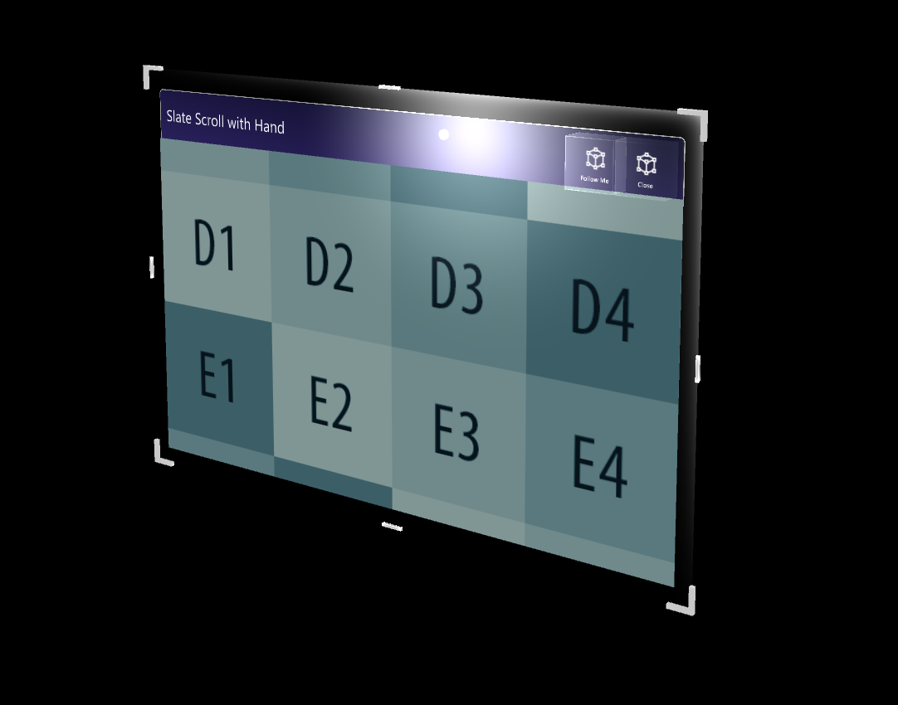
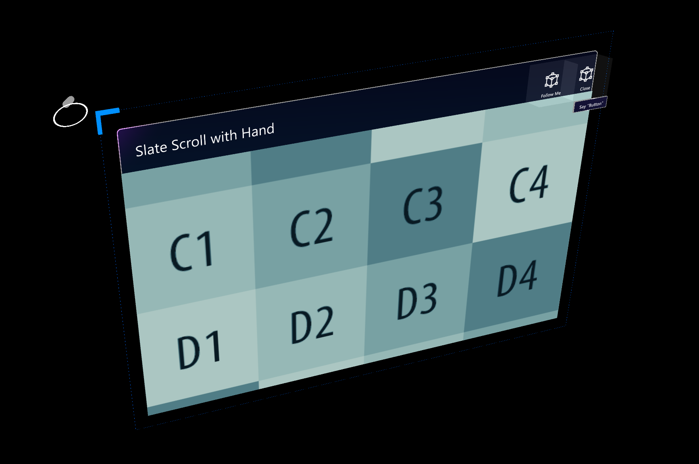

Slate

Slate 预制体提供了一个薄薄的窗口样式控件，用于显示2D内容，例如纯文本或包括媒体在内的文章。它提供了一个可抓取的标题栏以及Follow Me和Close 功能。内容窗口可以通过手动输入来滚动。
如何使用 slate 控件
一个slate控件由以下元素组成:
- TitleBar: 整个标题栏在slate的顶部。
- Title: 标题栏左侧的标题区域。
- Buttons: 标题栏右侧的按钮区域。
- BackPlate: slate的背面。
- ContentQuad: 指定内容为素材。该示例使用一个示例材料'PanContent'。
边界框
一个slate控件包含一个用于缩放和旋转的边界框脚本。有关包围框的更多信息，请参见边界框页面。
 按钮
一个标准的slate在标题栏的右上方提供了两个默认的按钮:
Follow Me: 切换orbital solver组件，让slate物体跟随用户。
Close: 禁用slate对象。
脚本
一般来说，NearInteractionTouchable.cs的脚本必须被附加到任何对象上，以接收来自IMixedRealityTouchHandler的触摸事件。
HandInteractionPan.cs这个脚本处理全关节手输入触摸和移动slate上的内容ContentQuad。HandInteractionPanZoom.cs: 除了平移交互之外，这个脚本还支持双手缩放。